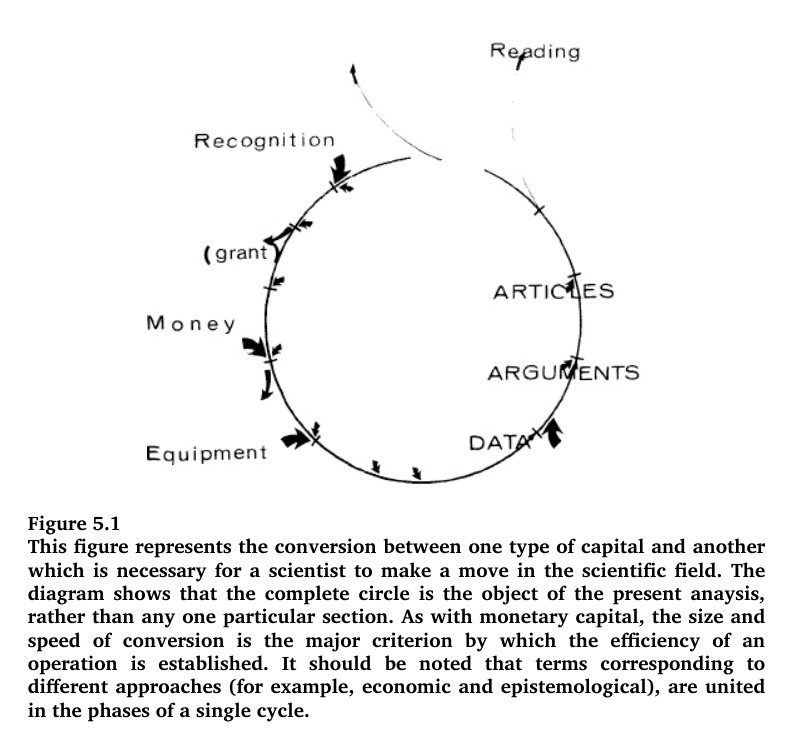

书籍介绍

科学家如何工作？他们如何“发现”科学事实？为试图回答这些问题，法国著名科学社会学家布鲁诺·拉图尔以及英国社会学家史蒂夫·伍尔加深入到美国的一个神经内分泌学实验室并与那里的教授共度两年时光，对科学家进行观察，看他们如何选择课题和申请基金，如何从事研究和发表论文，如何评级评奖等等。作者以自然主义的方式研究科学，特别探讨了科学的社会制约因素，触及人性、社会、理性和知识这些更大的问题，从一个全新的视角对科学事实的建构做了独到的诠释。本书是科学社会学也是国外社会学研究的前沿领域SSK的经典之作。
(摘自豆瓣读书)
第1-3章评论
2022-10-27
今天读到布鲁诺·拉图尔(Bruno Latour)和史蒂夫·伍尔加(Steve Woolgar)的作品《实验室生活：科学事实的建构过程》。这是一本很好的书，推荐每一位生科院或元培生科方向的同学阅读，尤其是大一大二尚未加入实验室的同学，阅读它的收获大于阅读生概途课推荐的The Double Helix。
该书作者对Salk Institute的Roger Guillemin实验室作了深入的研究，从人类学的角度透视了科学研究、论文发表、竞争、实验室结构以及科学家职业生涯。作者十分恰当地将这些方面概括为"实验室生活"。2022年，此书在Google Scholar上的引用数已超过两万。
Roger Guillemin是1977年诺贝尔生理学或医学奖得主，他与Andrew V. Schally因为发现大脑能产生肽类激素而获奖，他们的工作主要是鉴定了促甲状腺激素释放激素(TRH) 和促性腺激素释放激素(GnRH)的结构。这项工作与同时期其他获得诺贝尔生理学或医学奖的工作相比，属于中等水平。调查的对象，Salk研究所，直至今天，仍然是生命科学领域内很有声望的机构。
因此，这是一只相当好的麻雀。
该书最吸引眼球的章节是第三章《制造事实：促甲状腺因素释放因子[TRF(H)]个案》，它或许会使科学工作者或未来的科研工作者感到被冒犯：我们从小就学会了区分观点和事实，你怎么能说科学事实是制造出来的呢？！
但在这个例子中，你能清楚地看到这个"制造"的过程，它真实、冷酷、不纯洁。
不仅包括"八年的艰苦努力"、“从成吨的下丘脑中提取几微克激素”、“学科交叉”，还包括"创立严苛规则来排除竞争者"，“巧妙安排学术会议以维护实验室利益"以及"忠实学习他人错误的研究者”。该章节成功地还原了该领域在1960s-1970s的历史，其中的若干结论已经被写入当下的生理学教科书，我想如果有老师开设一门《生理学讨论课》的话，这将是绝妙的参考资料。
Laboratory Life: The Social Construction of Scientific Facts有英文本，法文本和中译本，中译本是2004年东方出版社出版的，翻译质量极差，但仍然难以掩盖作者的洞见和专业素养。
不过令人遗憾的是，作者之一的布鲁诺·拉图尔已在半个月前去世，哲人其萎。
第4-6章评论
2022-11-06
在发出上一篇评论和引述后三天，我读完了《实验室生活》这本书。尽管该书首次出版于1986年，三十多年后的今天，它的观点仍然没有过时，甚至是超前的。了解这些观点，能够激发对于科研生涯的新的思考。所以，虽然上次已经推荐过了，但我还是想要把它再次推荐给所有生科院的大一大二同学，特别是那些尚未加入实验室的同学。
上次简单介绍了此书前三章的内容，并引述了一些片段，这里将介绍此书剩下的三章。
作为第三章的后继，第四章《事实的微观社会学》更具备社会科学理论著作的特点。如果说第三章是在解剖麻雀的话，第四章就是在谈论鸟类学。简明地说，有两个观点：
- 事实是存在的，就像TRF确有其事；
- 事实是被建构的，就像第三章描述的TRF建构过程。
两个观点不矛盾。具体而言，1968年，促甲状腺素释放因子（TRF）仅仅是一种陈述，可能是事实，也可能是假象；而到了1970年，TRF已经成为了一种事实，人们都说"某团队发现了TRF"。1968-1970的研究争论使得TRF被确证存在，这个过程就是建构。
以现在的眼光来看，人们认为“TRF的结构是Pro-Glu-His-Pro-NH2”这一事实是争论结束的原因。但这些人是事后诸葛亮。因为你一旦进行一个假设：“如果至今都没有人找到TRF的正确结构，学术界争论不断”，那么“TRF的结构是Pro-Glu-His-Pro-NH2”就将是这场争论在未来结束时的结果。
也就是说，是争论和研究建构了事实，而不是事实为争论定论。但是，我仅仅在此书的语境中认同这个观点，因为它很有诡辩嫌疑，大可以用魔法对付魔法。
不过与此相比，第五章《科学家的可信性》就显得实在多了。这一章讨论的是：一个科研人员在他/她的科研生涯中，所追求的究竟是什么？我认为很多学生是没有想清楚的。如果你拿这个问题去做生涯访谈，可能得到非常丰富的答案，但你需要自己去判断这些答案的价值。我想引用作者的一段话说明这个问题：
当纳坦让他的技术员准备组装下一部鉴定仪器时说：‘如果我们不进行两次检验，别人会说我们文章中的数据源于其他方法’……后来当别人问纳坦为什么用这种仪器时，他回答：‘对于科学而言,怎样谨慎都不过分！’
(摘自东方出版社2004年版，第176页)
这个问题应该换一种问法：是什么东西驱动了科研人员进行研究/更换课题/跳槽？
是为了物质回报？还是为了奖励和荣誉？或者是出于作出贡献青史留名的渴望？作者认同这里的每一个答案。但他更进一步提出一个概念，credit(译者硬译成“可信性”，令人困惑，但这种困惑反而有利于避免读者望文生义)。试看下面这个循环，这是一个科研人员在领域取得成绩需要的资本，如何从一种形式转换到另一种形式。

好的科研人员能让这个循环不断运行，credit是这个循环运行的能源。例如：
credit高的人，有更多的经费，就有更好的设备，就有更多的数据，就有更多的论据，就有更好的论文、产生更多解释、获得更多的奖励、管理更多经费…如此循环。有些人走上坡路，有些人走下坡路。这个步骤中的每一步都影响了credit，例如获得诺贝尔奖，拿到大笔经费（出于学术或其他原因），被重大项目排除在外，被发现数据造假，发表重要论文。credit巧妙地将各个要素整合起来，它至少包括：学术信誉、学术声誉、人脉关系、教育背景、能力认可、荣誉、研究前景、申请经费的能力。如果硬要将credit换一个更贴切的翻译，我想“学术资本的获取能力”是很合适的。简而言之，一切的努力，一切的奋斗，都是为了提高自己的这种能力。
不能做到这一点的人就会出局，因为这是适者生存的铁律。
Last modified on 2022-10-27